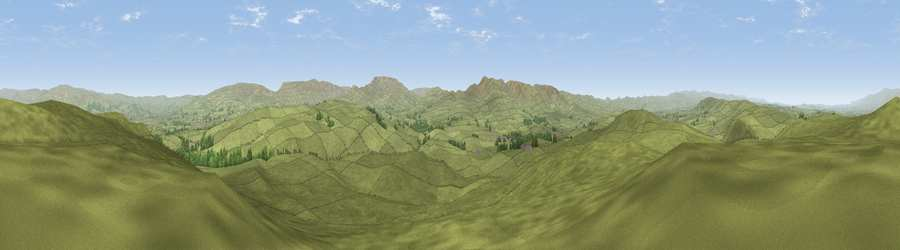

Nettle Hill
#6594 in England · top 20% of its area beats it · near Crosby GarrettThe view, rendered

A 360° render of this exact spot computed from the terrain model, tree cover and land cover — summer colours, afternoon light, calibrated against photographs of famous viewpoints. Real trees, hedges and buildings will differ in detail.
The panorama
Grey silhouette: terrain skyline in each direction (720 bearings, Earth curvature and refraction included). Dashed green: skyline with trees (+15 m) and buildings (+8 m) as obstacles. Blue strip: how far the ground is visible on each bearing.
Where the view opens
Wedge length = distance to the farthest visible ground on that bearing (vegetation-aware). Rings at 10, 25 and 50 km.
What fills the view
97% grassland · 2% woodland
Angular shares of the visible panorama (visual magnitude), not map area. Landscape diversity 0.06 (0–1 Shannon).
Key numbers
More beautiful places nearby
The staircase of upgrades: each row has a higher view potential than everything closer. Driving times are estimates from straight-line distance, calibrated against real road routing — check an actual route before setting out.
| Place | Direction | Drive | Score |
|---|---|---|---|
| Viewpoint near Crosby Garrett | NE · 1 km | ~3 min | 69.3 |
| Viewpoint near Ravenstonedale | S · 6 km | ~13 min | 70.8 |
| Green Bell | SSW · 7 km | ~14 min | 75.2 |
| Randygill Top | SSW · 8 km | ~16 min | 76.0 |
| Viewpoint c9983_7527 | SSE · 10 km | ~19 min | 76.3 |
| Viewpoint c10024_7603 | SE · 11 km | ~20 min | 76.9 |
| Fell Head | SW · 11 km | ~21 min | 78.8 |
| Calders | SSW · 12 km | ~23 min | 79.0 |
54.46182, -2.44148 · source: dobih hill · position refined by local search. Computed location — check access rights before visiting.